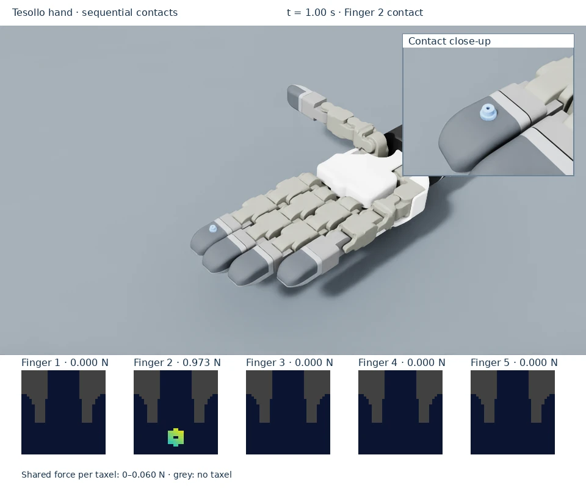
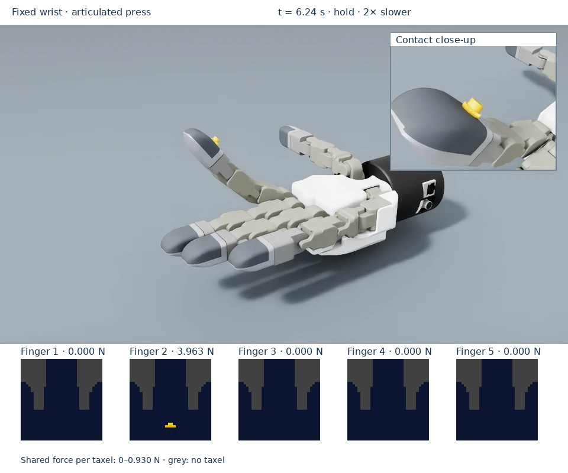

Explore the examples
Choose the scene that matches what you want to learn. Each page includes a short video, expected behavior, the command to run it, and how to interpret its tactile output.
 Start with a flat padSee a contact footprint form as a falling gear settles.
Start with a flat padSee a contact footprint form as a falling gear settles.

Explore all five fingertipsFollow sequential contacts and compare loaded and unloaded fingers.
Watch articulated pressingConnect joint movement with contact, force, and release.Example |
Main idea |
Expected output |
|---|---|---|
Grid sensing and a gravity load |
32 × 32 frame; gear load near 4.905 N |
|
Firmware-mapped fingertip contact |
Loaded finger’s frame active; other frames zero |
|
Articulation creates contact |
Fixed wrist/object; finger motion; hold and release |
The videos use actual captured Isaac Sim 5.1 poses and tactile arrays, rendered separately with native RTX cameras. Slow playback is labeled in the clip. The force frames preserve their exact pixel mapping and share one scale within each clip; grey indicates unused cells. Hand videos include a second native camera view of the contact so the small gear remains legible while the overview shows all five fingertips.